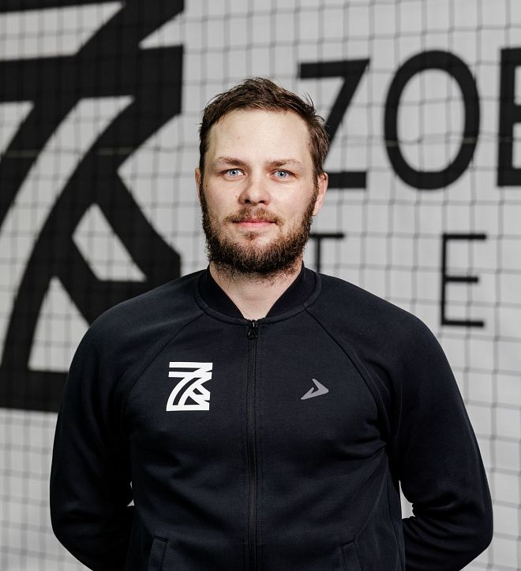

Повышение взрывной скорости
Развиваем способность мгновенно ускоряться и совершать резкие рывки с места. Это дает игроку решающее преимущество: позволяет первым успеть к мячу, успешно совершить перехват и оставить защитников соперника позади.
Футбольное ОФП в Zobnin Team — это специализированная физическая подготовка, заточенная под реальные игровые сценарии.Тренировки проходят на базе центра: в оборудованном зале ОФП, на полноразмерном открытом поле и в крытом манеже. Мы развиваем физические качества футболиста комплексно, снижая риск травм и выводя уровень игры на новую высоту.

Что развивает ОФП в футболе
Развиваем способность мгновенно ускоряться и совершать резкие рывки с места. Это дает игроку решающее преимущество: позволяет первым успеть к мячу, успешно совершить перехват и оставить защитников соперника позади.

Через укрепление связок, суставов и создание мышечного корсета подготавливаем тело к нагрузкам. Тренеры по ОФП в футболе подбирают программу в зависимости от возраста и подготовки.

На занятиях по ОФП тренируем сердечно-сосудистую и дыхательную системы, чтобы сил хватало на весь матч. Выносливый футболист сохраняет высокую концентрацию и точность передач даже на последних минутах самого напряженного игрового отрезка.

Отрабатываем баланс, ловкость и маневренность в динамике. Это помогает игроку сохранять устойчивость в силовых единоборствах, быстро менять направление бега и технично исполнять сложные приемы на высокой скорости.



КОНТРОЛЬ ПРОГРЕССА

Высокоточная цифровая диагностика физических качеств футболиста: фиксируем стартовую скорость, высоту прыжка и баланс мышц ног. Данные исключают перегрузки, снижают риск травм и наглядно показывают рост результатов по итогам тренировочного цикла.

FAQ